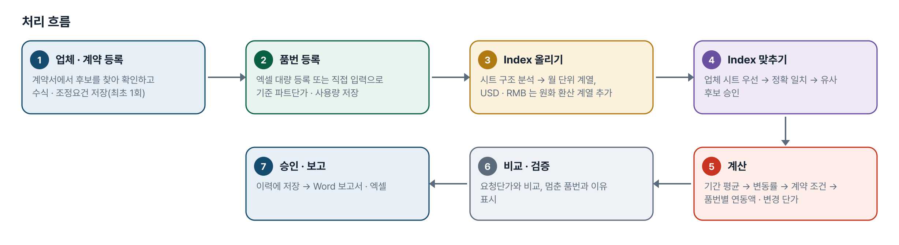
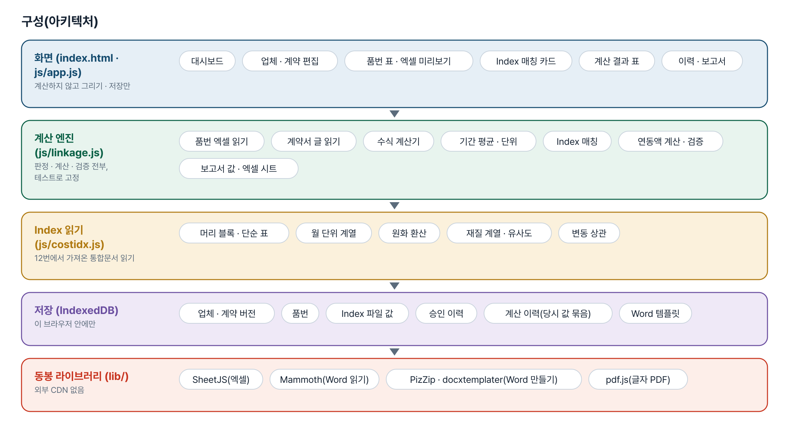
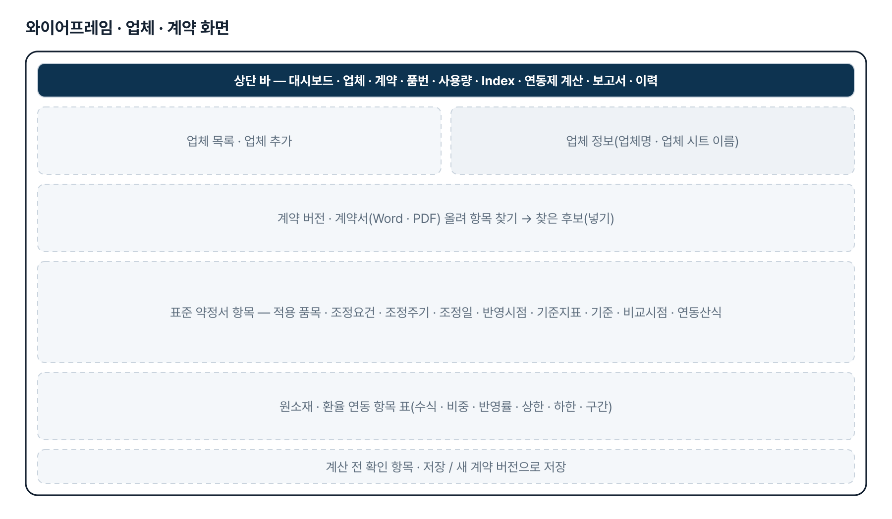
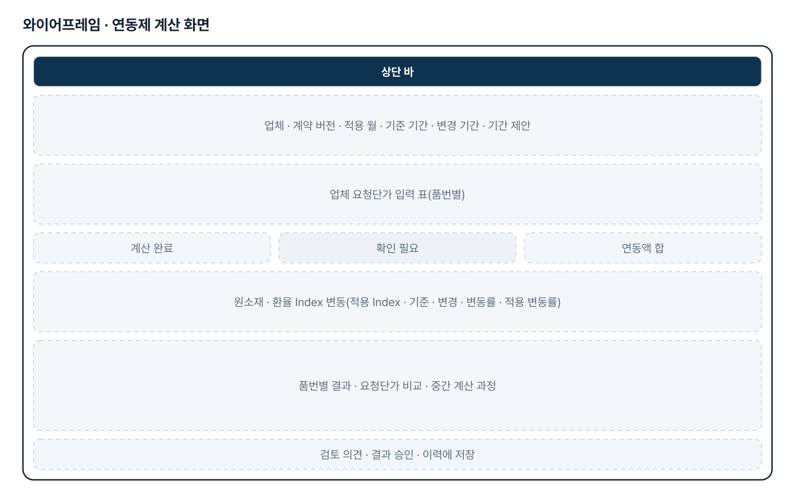
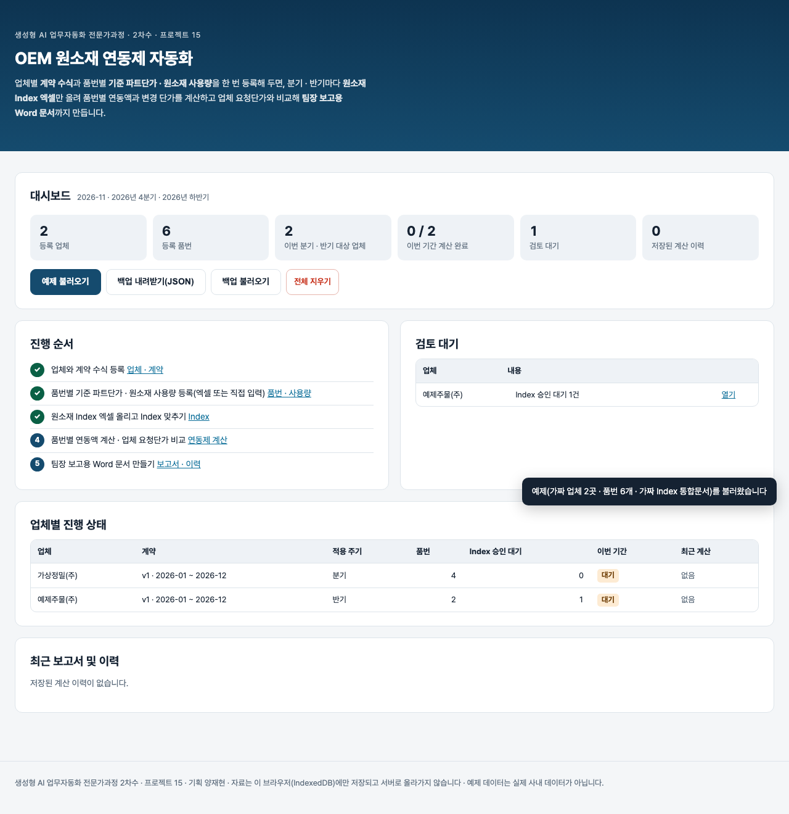

기획서 내려받기
파이프라인 · 아키텍처 · 와이어프레임 · 개발일지가 들어간 워드 문서입니다. 버전마다 따로 남깁니다.
| 버전 | 날짜 | 바뀐 점 | 파일 |
|---|---|---|---|
| v1.0 | 2026-11-12 | 과제 변경 — 12번(도면 기반)에서 「OEM 원소재 연동제 자동화」로, 프로젝트 15 신설 / 업체 · 계약 버전 · 품번 · Index · 계산 · 보고서 6개 메뉴와 대시보드 / 계산 엔진 linkage.js(중량 · 비중 · 사용자 정의 · 환율, 조정요건 · 상한 · 하한 · 구간), Index 읽기는 12번 costidx.js 재사용 / 기획자 시제품 V2 의 표준 약정서 1~9번 항목 구조 · 가로형 Index Excel 형식 · Index 삭제를 반영 / Word 보고서(템플릿 꼬리표) · 엑셀 4시트, IndexedDB 저장 · 백업, 계산 테스트 122 · 화면 테스트 52 | 워드 내려받기 |
요구사항과 구현
| 기획서 요구 | 구현 |
|---|---|
| 업체별 계약정보와 품번별 정보 분리 | 업체 1 — 계약 버전 N — 연동 항목 N, 업체 1 — 품번 N — 원소재 사용량 N. 원소재는 고정 열이 아니라 이름 → 값 구조 |
| 품번별 원소재 엑셀 대량 등록 | 머리글 이름으로 열 인식(순서 무관) · 원소재 열 동적 인식 · 열 직접 지정 · 미리보기 · 신규/기존/오류 구분 · 행 · 열을 짚은 오류 · 덮어쓰기 동의 · 승인 후 저장 · 양식 내려받기 · 파일명 · 일자 기록 |
| 품번 수기 입력 | 표에서 행(품번) · 열(원소재) 추가 · 삭제 · 이름 바꾸기, 저장 전 확인, 엑셀과 같은 구조로 저장 |
| 환율 예외 처리 | 환율은 사용량 칸 없음(「-」), kg 입력 불가, 적용 비중 100% 고정, 일반 원소재 kg 과 합산하지 않고 별도 연동액으로 계산 |
| 계약서 등록 · 분석 | Word · 글자 PDF 를 읽어 표준 「납품대금 연동 특별약정서(별첨)」 1~9번 항목과 기간 · 원재료 후보를 찾음. 자동으로 넣지 않고 담당자가 「넣기」. 고치면 새 계약 버전 |
| 계약 수식 관리 | 중량 연동식 · 비중 연동식 · 사용자 정의 수식(사칙연산) · 환율 별도 연동, 조정요건(±%) · 항목별 최소 변동률 · 상한 · 하한 · 구간별 차등 · 반영률. 수식 미정이면 계산 중단 |
| 원소재 Index 엑셀 관리 | 시트 전부 분석 — 가로형(원소재가 행 · 날짜가 열, 기획자 시제품 형식) · 머리 블록(품목이 열) · 세로형(날짜 열 + Index 열). 기간 · 빈 달 표시, 업체명과 같은 시트(또는 「원본 시트」 칸) 우선, 소재가 맞지 않으면 자동 적용하지 않음. Index 파일 지우기(승인 연결만 해제) |
| 정확 Index 매칭 · 유사 Index 추천 | 이름 · 규격 재질이 맞는 Index 하나면 적용, 여럿이면 담당자 선택. 없으면 유사 후보 최대 3개(재질 유사도 · 변동 상관 · 방향 일치 · 기간 변동률 · 데이터 완전성 · 점수) — 계약상 대체 허용 + 승인 전에는 계산에 쓰지 않음 |
| 원소재 연동제 계산 | 기준 · 변경 기간 평균 → 변동률 → 계약 조건 적용 → 품번별 사용량 · 비중으로 연동액, 환율은 별도. 중간 계산 과정 표시 |
| 업체 요청단가 비교 | 품번별 요청단가 입력 → 계약 계산 변경단가와 차액 · 요청 인상률 · 계약 계산 인상률, 원소재로 설명되는 금액과 구분 |
| 계산 결과 검증 | 수식 불명확 · 품번 중복 · 사용량 · 단가 누락 · Index 누락 · 기간 · 계약 버전 불일치 · 단위 불일치 · 유사 Index 미승인 · 대체 불허 · 비정상 중량 · 환율 kg · 환율 100% 불일치 · 원소재 중복 — 보정하지 않고 멈추거나 알림 |
| Word 보고서 자동 생성 | Word 양식(.docx)에 꼬리표를 적어 올리면 서식을 유지한 채 값만 채움(docxtemplater). 기본 틀 제공, 없는 값은 「확인 필요」 |
| 데이터 저장 · 이력 관리 | IndexedDB 에 업체 · 계약 버전 · 품번 · Index 파일 · 승인 이력 · 계산 이력 저장. 이력은 당시 계약 · 품번 · 결과를 통째로 묶어 두어 나중에 바뀌지 않음. JSON 백업 |
| 로컬 · 오프라인 · 외부 전송 금지 | 정적 페이지, 라이브러리(SheetJS · Mammoth · PizZip · docxtemplater · pdf.js) 리포에 동봉, 외부 CDN · 서버 · AI 호출 없음 |
그림으로 보기





개발일지
2026-11-13 · 마무리 — 로그인 · 게시판 · 첫 화면(판 2026-11-13.1)
- 과정 마무리 묶음을 붙임(마산 2차수 과제와 같은 키트) — 로그인 전 첫 화면(사진 3장 · 기능 · 사용 순서 · 기획서), 회원가입 → 사용 신청 → 관리자 승인, 게시판 · 새 글 알림, 내 정보, 관리(구성원 승인 · 첫 화면 모양)
- Supabase 표 · 함수 · 정책은 전부 build261115_ 로 시작(auth.sql · board.sql · site.sql). 과정용 프로젝트에 적용했고, supabase/README.md 순서대로 본인 프로젝트로 옮길 수 있음
- 도구의 계산 · 판정 · 저장 방식은 그대로(업무 자료는 지금처럼 브라우저 안에서만 처리). 기획서 · 사용법 쪽은 로그인 없이 읽음
- 내 PC(파일로 열기 · localhost)에서는 로그인을 건너뜀 — 주소 끝에 ?auth=1 을 붙이면 로그인 화면을 볼 수 있음
2026-11-12 · 첫 판
- 11-09 메일 「양재현 프롬프트 — 수정 버전 2」와 11-12 패들릿에 올라온 기획자 시제품(v0.2, 연동액 계산 미구현)을 함께 읽고 작업 지시서로 옮김
- 엔진부터 만들고 node 에서 예제로 계산 확인 → Word 틀 생성 · docxtemplater 채우기 확인 → 화면
- 기획자 시제품이 쓰는 표준 「납품대금 연동 특별약정서(별첨)」 번호 항목을 계약 틀에 추가, 조정요건(±%)을 계약 수준 조건으로
- 수업 중 기획자가 V2 를 다시 올려 가로형 Index Excel(원소재가 행 · 날짜가 열) 읽기와 Index 파일 지우기를 추가
- 업체 시트 판정이 「(주)」에서 어긋나던 것을 테스트로 잡아 고침. 표준 약정서의 10번 기타사항 숫자를 조건으로 읽던 것도 고침
- 계산 테스트 122 · 화면 테스트 52 통과, 엔진을 일부러 깨뜨려 실패하는지 확인